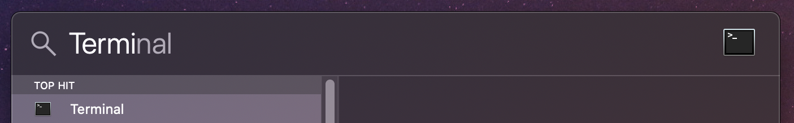
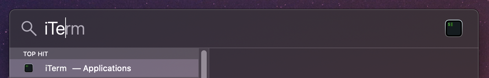

Cliente
Si estás dentro de un SO con Interfaz Grafica, cómo Gnome, KDE, o el de Mac OS X, necesitas un cliente para acceder a la terminal, y este abrir el bash y poder ser el todo poderoso, está claro que sin eso no podemos ir avanzando, existen muchos clientes, pero listo algunos:
- Terminator
- Alacritty
- iTerm2
- Terminal, Es nativo nativo del Mac OS X.
¿Cómo acceder en Mac OS X?
Con abrir el Spotlight combinando al mismo tiempo las teclas Command + Space bar aparece una ventana emergente par escribir, ponga el nombre “Terminal” ó “iTerm” por ejemplo, recuerde tener por lo menos iTerm instalado, sino no podrá conseguirlo.

Probando con iTerm:
